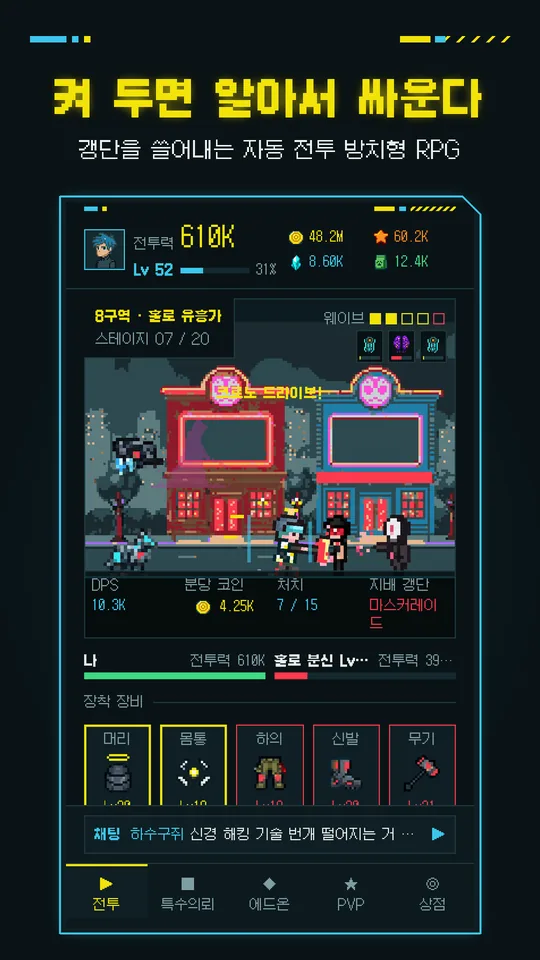
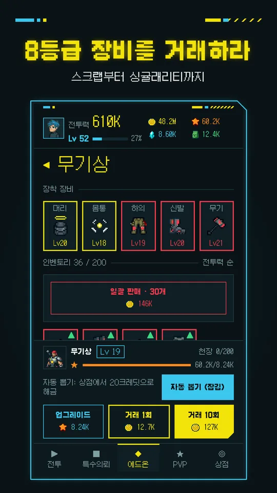
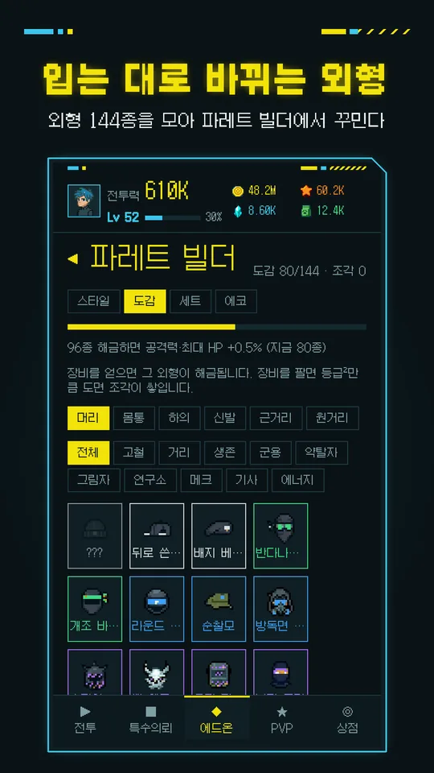
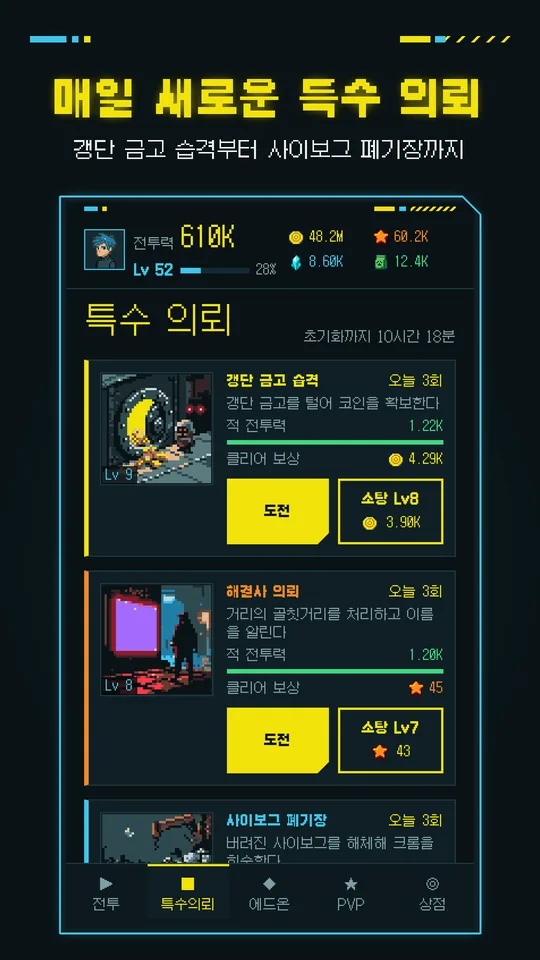

01 · Mobile Game · 자체 개발
Neon Station — 사이버펑크 도트 방치형 RPG
2087년 멈춰 버린 궤도 엘리베이터 정거장을 무대로 한 방치형 RPG입니다. 기획, 개발, 도트 아트, 사운드, 운영을 한 사람이 AI를 동료 삼아 맡았고, 기획서를 쓴 지 엿새 만에 Google Play 비공개 테스트를 시작했습니다.
재화·뽑기·순위는 서버 함수에서만 계산하고, 확률형 아이템의 확률과 천장 규칙은 게임 안에서 모두 공개합니다. 배경음악과 효과음은 코드로 직접 합성했습니다.



